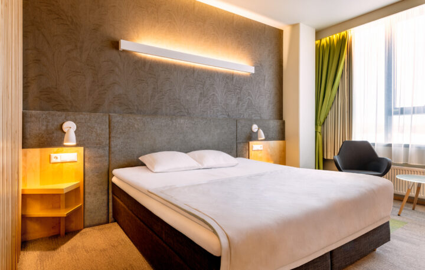

Tere tulemast meie hotelis!
Hotell Tartu on Teie parim valik, kui hindate sõbralikku teenindust, soodsat hinda ning mugavat hotellituba Tartu südalinnas.
Meist
1964. aastal ehitatud ja 2017. aastal juurdeehituse saanud hotell "Kodune mugavus" on üks linna pikema ajalooga hotelle, mille interjööri kujundamisel on lähtutud nostalgilisest, samas moodsast 60ndate aastate stiilist. Tänu suurepärasele asukohale on hotell "Kodune mugavus" olnud hinnatud peatuspaik nii ärireisijate kui puhkajate seas. 
Pakume mugavat öömaja Tartu linna südames - hotelli vastas asub bussijaam, jalutuskäigu kaugusel on Ahhaa Teaduskeskus, Aura Veekeskus, vanalinn, teatri- ja kontserdimaja Vanemuine ning mitmed ostukeskused.